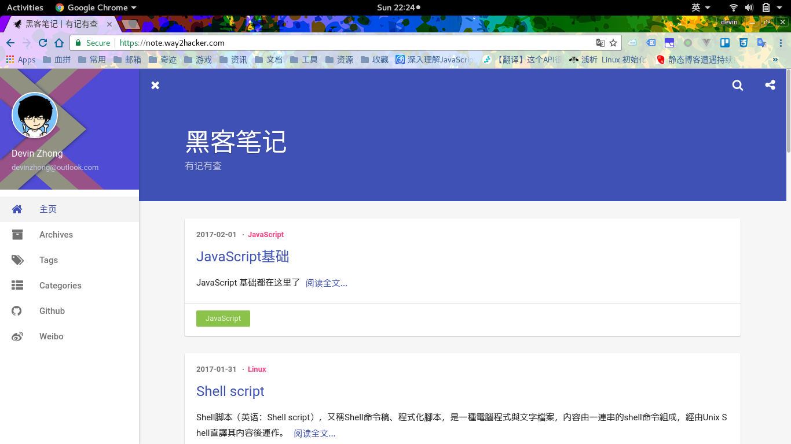
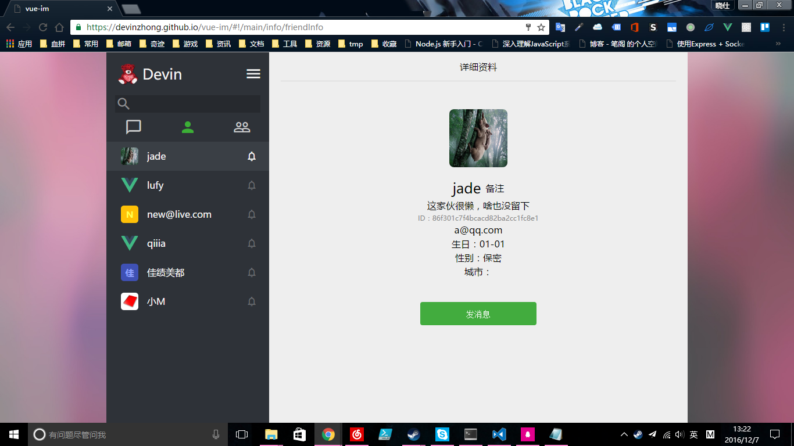
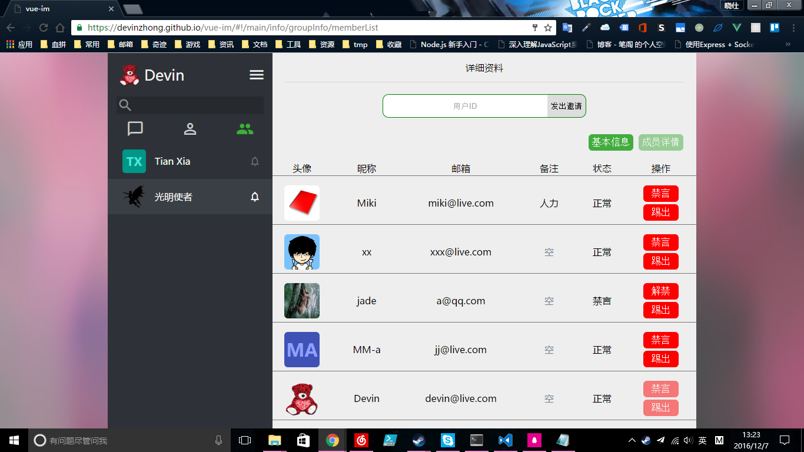
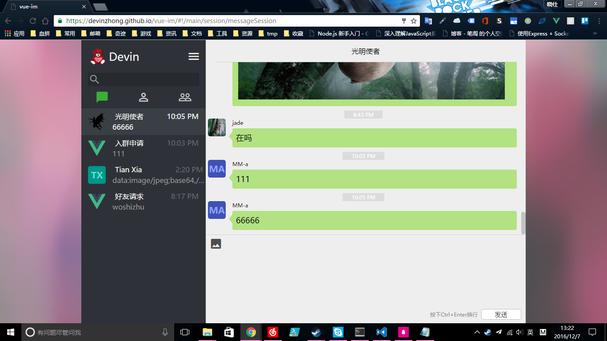

-
- Basic info. 基本信息
- 个人信息: 钟晓仕 / 男 / 21岁
- 专业背景: 计算机科学与技术 / 广东海洋大学
- 英语水平: CET-4
- 常用ID: devinzhong
- Blog: note.way2hacker.com
- GitHub: www.github.com/devinzhong
-
- Experience. 项目与工作经验
奇迹空间(北京)科技有限公司（2016.8 - 2016.11）
-
旅游餐饮项目
这是一个国际化旅游餐饮项目，客户端支持 iOS 和 Android 平台，管理员和客服人员使用 Web 界面。我和小组的其他成员一起负责后台聊天模块的开发。这个项目使用了 Laravel 作为基础框架，用 Vue.js 开发 Web 界面。虽然这个模块的开发最后取消了，但是在团队的这段时间也让我收益良多，以下为这段期间我的收获：
掌握了在团队开发中常用工具的使用，比如：使用 git 在 GitLab 上与他人协作、使用 Trello 进行任务管理、使用 BearyChat 与团队成员沟通、在 Google Docs 和 DokuWiki 上查看和编辑文档等
夯实了 PHP 基础，学会了 Laravel 框架的基本使用
北京尚观科技有限公司广州分公司（2016.12 - 2017.1）
-
搭建一套基于 CDN 加速的高可用的论坛系统
学校以班级为单位派遣我们到尚观公司进行半个月的 Linux 学习，这是授课老师布置给我们做的一个项目。整个项目使用 9 台服务器，分别为：2 台 DNS、2 台 Squid、1 台 Nginx、2 台 Tomcat、1 台 MySQL、1 台 NFS。我学习了这个服务器架构的运行机理，并运行虚拟机实现了这套架构，最后我还将配置方式编写成脚本分享给有需要的同学。
项目主要技术点如下：
DNS 根据客户端所属地区将域名动态解析到对应地区的 Squid 代理服务器
Nginx 反向代理到 2 台 Tomcat 服务器做负载均衡
Tomcat 服务器只作为 Servlet 容器，数据由 MySQL 服务器提供，论坛代码由 NFS 服务器提供
将配置服务器的方法编写成 Shell 脚本
个人项目
-
黑客笔记（2016.9 - 至今） 源代码 Demo
使用 Hexo 博客工具构建的个人笔记，项目使用 Material Design 风格的 indigo 主题，简约大方。笔记更新频度高，用于记录易忘的知识点或一些实用技巧，目前主要用于自己查阅，好的笔记也会分享给同学
 -
vue-im（2016.7 - 2016.8） 源代码 Demo
这是我独自设计并实现的一个基于 Vue.js 和即时通讯服务的社交应用，界面设计模仿了微信的网页版。
项目使用技术：Vue.js、vue-router、Vuex、vue-avatar、野狗即时通讯服务
   -
scripts 源代码
个人编写的简易又实用的 Shell 脚本，目前有 shadowsocks-libev 的搭建脚本，一个脚本即能适配多种支持 Systemd 的 Linux 发行版
-
vue-avatar（2016.8） 源代码 Demo
vue-avatar 原本为是一个流行的 Vue.js 头像组建，但在使用过程中我发现它并不总能满足我的需求，所以我将他 fork 过来进行改造，并写了个简单的 Demo 用于特性展示
改造内容：添加对除 px 外的其他长度单位的支持、支持设置圆角和边距的大小、修复文本溢出的 bug 等
-
- Skill. 技能清单
Web前端
-
HTML / CSS
能够编写语义化的 HTML，合理布局页面骨架
熟悉 CSS3 新特性的使用，如实现酷炫的 3D 动画
掌握 Less / Sass 等 CSS 预处理器的使用
-
JavaScript
熟悉原生 Javascript，即使不用 jQuery 等工具库也能完成工作
熟悉 Vue.js、D3.js、Lodash 等库的使用
熟悉 ES2015 的使用
-
其他
熟悉 Webpack、Gulp 等前端自动化工具的基本使用
掌握 Babel 编译器的使用，确保代码在所有支持 ES5 的浏览器里都能正确执行
了解前端安全、性能优化方面的一些知识
后端
-
熟悉 Linux 开发环境，有一年 Linux 日常使用经验
熟悉 Java、PHP、Node.js 编程语言，能编写简单的后台代码
-
- Ideal & Hobbies. 理想与爱好
-
我由衷热爱编程这个行业，认为程序能使世界越来越美好，坚信“假如某天人工智能真的失控了，最后拯救世界只能是程序员”。
同时，我也崇尚开源，在 GitHub 上已为 4 个项目作出过贡献，其中 2 个 Vue.js 项目，两个 Linux 项目。在好友圈子里，我是开源的传播者，有什么好的东西，我会拿来与同学分享。比如，我鼓励同学使用 Linux 作为开发机、教大家使用 shadowsocks 来绕过 GFW、介绍流行的静态博客 Hexo 给同学使用，等。这虽然没有直接贡献代码，但是传播了开源软件，让他们为更多人提供服务，这也是我的贡献。
我对新事物充满好奇心，主要关注领域包括：科技、IT和游戏。闲暇时间多用于阅读，内容主要包括一些优秀的博客和微信公众号文章。